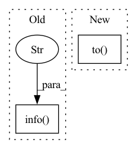

Pattern ID :1275

Before Change
update_sched_on_iter = True if isinstance(scheduler, ExponentialDecayLR) else False
logger.info(f"Net: {type(model)}")
logger.info(f"Loss: {type(loss_fn)}")
logger.info(f"Optimizer: {type(optimizer)}")
logger.info(f"Scheduler: {type(scheduler)}")
writer = SummaryWriter(os.getcwd()) if cfg.tensorboard else None
After Change
// Model
// Use Hydra"s instantiation to initialize directly from the config file
model: torch.nn.Module = instantiate(cfg.model).to(device)
loss_fn: torch.nn.Module = instantiate(cfg.loss).to(device)
optimizer: torch.optim.Optimizer = instantiate(
cfg.hparams.optimizer, model.parameters()
)
scheduler = instantiate(cfg.hparams.scheduler, optimizer)
In pattern: SUPERPATTERN
Frequency: 3
Non-data size: 2
Instances
Fragment ID: 6323105
Project Name: dmizr/phuber
Commit Name: a264efba8a4b4e2f10bf1e7fe4141e5dcdf017f3
Time: 2020-11-27
Author: david.mizrahi@epfl.ch
File Name: phuber/runner.py
M Class Name: AnonimousClass
N Class Name: AnonimousClass
M Method Name: train(1)
N Method Name: train(1)
M Parent Class:
N Parent Class:
M File Name: phuber/runner.py
N File Name: phuber/runner.py
M Start Line: 20
M End Line: 79
N Start Line: 21
N End Line: 79
'>
Before Change
for every sequence, original and reconstructed.
if config is None:
logging.info("!! Parameter config is not given: Using default_config")
config = default_config
x = input_data
y = input_label
After Change
x, y = x.to(config.device), y.to(config.device)
batch_one_hot = utils.batch_one_hot(y, config.label_dim)
y = batch_one_hot.to(config.device)
x_recon = model(x, y) // has shape [batch_size, seq_len, 159]
_, seq_len, _ = x.shape
'>
Fragment ID: 6323107
Project Name: bioshape-lab/pirounet
Commit Name: 31dd7cbabee71a7b32c2f3a9411f2c56138730f5
Time: 2022-07-22
Author: papillon@umail.ucsb.edu
File Name: move/evaluate/generate_f.py
M Class Name: AnonimousClass
N Class Name: AnonimousClass
M Method Name: reconstruct(9)
N Method Name: reconstruct(9)
M Parent Class:
N Parent Class:
M File Name: move/evaluate/generate_f.py
N File Name: move/evaluate/generate_f.py
M Start Line: 433
M End Line: 516
N Start Line: 431
N End Line: 517
'>
Before Change
base_encoder = eval(args.backbone)
model = SimCLR(base_encoder, projection_dim=args.projection_dim).to(device)
logging.info(f"Base model: {args.backbone} - feature dim: {model.feature_dim} - projection dim {args.projection_dim}")
logging.info("Fitting SimCLR model")
//model.fit(args, device)
model.load_state_dict(torch.load("simclr_resnet18_epoch100.pt"), strict=False)
// Compute feature importance
W = 32
After Change
// Prepare the model
device = torch.device("cuda") if torch.cuda.is_available() else torch.device("cpu")
pert_percentages = [5, 10, 20, 50, 80, 100]
perturbation = GaussianBlur(21, sigma=5).to(device)
assert args.backbone in ["resnet18", "resnet34"]
base_encoder = eval(args.backbone)
model = SimCLR(base_encoder, projection_dim=args.projection_dim).to(device)
'>
Fragment ID: 6323114
Project Name: jonathancrabbe/label-free-xai
Commit Name: 5ec7cb757f497d1cef0817442a377b4cf2e5d168
Time: 2022-05-19
Author: jonathan.cr1302@gmail.com
File Name: experiments/cifar10.py
M Class Name: AnonimousClass
N Class Name: AnonimousClass
M Method Name: consistency_feature_importance(1)
N Method Name: consistency_feature_importance(1)
M Parent Class:
N Parent Class:
M File Name: experiments/cifar10.py
N File Name: experiments/cifar10.py
M Start Line: 25
M End Line: 79
N Start Line: 36
N End Line: 98